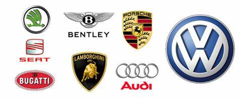

En sus inicios, Volkswagen tuvo sus raíces en la Alemania de la década de 1930. Fue en
este período que se ideó el concepto del automóvil del pueblo; y se dio vida al
emblemático Beetle. Este automóvil icónico se convirtió en un símbolo de movilidad
accesible y confiable para las masas. A pesar de los desafíos iniciales, Volkswagen
logró consolidarse en el mercado y sentar las bases de su éxito futuro.
A medida que pasaban las décadas, Volkswagen experimentó un desarrollo y
crecimiento significativos. La marca se expandió internacionalmente y se convirtió en
uno de los fabricantes de automóviles más reconocidos a nivel mundial. Modelos
emblemáticos como el Golf contribuyeron a su ascenso, estableciendo nuevos
estándares en términos de diseño, calidad y rendimiento.
Sin embargo, la historia de Volkswagen también ha estado marcada por sucesos
históricos que cambiaron el curso de la marca. Uno de los momentos más impactantes
fue el escándalo de las emisiones en 2015, que sacudió a la compañía y generó un
replanteamiento profundo de sus prácticas. Este suceso llevó a Volkswagen a
enfocarse en la sostenibilidad y a adoptar medidas para reducir su impacto ambiental.
Marcas que pertenecen a este grupo
Además de enfrentar desafíos, Volkswagen ha demostrado una capacidad notable para
adaptarse y expandirse. A lo largo de los años, ha adquirido e incorporado otras marcas
reconocidas al grupo Volkswagen:
- Volkswagen
- Audi
- SEAT
- ŠKODA
- Bentley
- Bugatti
- Porshe
- Lamborghini

Volver 5 curiosidades y datos sorprendentes de Volkswagen
1. Raíces nazis ...
2. Ford no quiso comprarla ni gratis tras la guerra ...
3. El Escarabajo, el que más tiempo ha estado en producción ...
4. La inauguración de su fábrica congregó a más de 70.000 personas ...
5. El viento, fuente de inspiración para muchos nombres ...